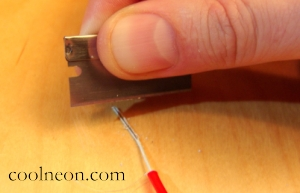
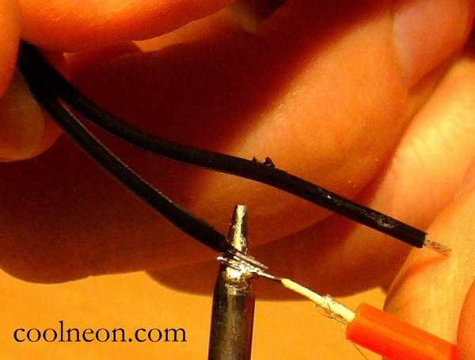
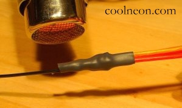

The Ultimate Beginners Guide to Soldering Cool Neon WireJeremy Paul BagaiYou have an amazing idea for a Cool Neon project, but all your friends are too busy with their own projects to do your soldering. (If only they had been willing to teach you the last time—there were days and days before Burning Man started!) No matter. You’ve come to the right place. There are other Cool Neon soldering guides on the Web; good ones, even. But each assumes you have some basic understanding of soldering, and then applies that knowledge to Cool Neon. Not this one. We understand you majored in English, or philosophy. (Or worse, psychology.) This guide takes you, the Ultimate Beginner, step by photo-illustrated step through the process of soldering a Cool Neon joint. Table of Contents
1 Preparations1.1 Your goalHere is the final product: a strand of lit Cool Neon wire. From the top: A power source (battery) plugs into a driver (1). The driver comes connected to a driver-side connecter (2). The driver-side connecter accepts a plug-in connection from the wire-side connecter (3). This connection can be pulled apart and pushed together at will. The wire-side connecter must be soldered to a strand of Cool Neon wire (4). That’s what this guide will teach you to do.
1.2 What you will needThe Learn to Solder Kit from Cool Neon. It includes:
You may already have all these items individually. But probably not, given that you are the Ultimate Beginner. Buy them together, cheap, from Cool Neon. This guide uses tools and material only from the Cool Neon: Learn to Solder Kit. 1.3 How long it will takeSomeone experienced in the ways of soldering Cool Neon, having all the necessary tools in easy reach, can solder a joint in under two minutes. At the other end of the spectrum, someone with no experience soldering (much less soldering Cool Neon), in possession of an unopened Learn to Solder Kit and only this page for guidance, might reasonably expect to spend two hours getting that first wire to glow. The second one will be much faster. (Your mileage may vary. Past performance no guarantee of future results. Caveat lector. Palma non sine pulvere. Per angusta ad augusta.) 2. About soldering2.1 What is soldering?Like welding, soldering is a means of joining together two or more pieces of metal. It requires less heat than welding because it does not involve melting the metal pieces together. Instead, solder, a filler material with a low melting point, melts and flows over the joint. 2.1.1 What is a soldering iron?Like a clothes iron, a soldering iron is simply a metal surface that gets hot when plugged in. 2.1.2 What does it mean to pre-tin?Instead of applying solder to two pieces of untreated metal (slow and difficult), first coat each piece of metal with solder. Then solder together the pre-tined pieces (quick and easy). 2.1.3 The Basic Principle: Heat wire, not solderMetal heats slowly; solder heats quickly. Applying hot solder to cold metal will not form a strong bond. Instead, put cold solder in contact with cold metal, and use the soldering iron to heat the metal from the opposite side. When the metal gets hot enough, it will melt the solder and form a strong bond. This applies mostly to the process of pre-tinning. Use the iron to heat the metal you want to tin, then apply solder to the hot metal. Joining metals that are already pre-tinned is quick and easy, because the surrounding solder melts quickly and easily. 2.2 Why solder?I’m in a hurry. Can’t I just tape my wire to my connecter? Yes, you can. The join might hold for up to an hour. Unless it is put under any stress. 3. The Basic Joint3.1 Overview3.1.1 Cool Neon wire anatomyYour Cool Neon wire consists of a vinyl cover (1), under which lives an inner coating (2), under which live two corona wires (3), and a core wire (4). (Hella Phat Cool Neon wire has two layers of inner coating. Angel Hair Cool Neon wire has no vinyl cover. These variations have little effect on soldering, other than how the wire is to be prepared.) 3.1.2 What will get connectedThe basic Cool Neon joint consists of two soldered connections. First, the core wire must be soldered to the short end of the connecter pigtail (1). Then, the two corona wires must be soldered to the long end of the connecter pigtail (2). The two pigtail ends of the connecter are staggered to prevent the connections from touching and shorting out. In particular, notice that the black cover of the long pigtail will not come in contact with the core wire, but instead will only touch red vinyl cover. 3.2 Prepare end of wire3.2.1 Strip outer coatingGrab a strand of Cool Neon wire. You can attach a connecter to either end. Your first step will be to strip ¾ of an inch of vinyl coating off one end of the wire. You will find the wire stripper provided to be adequate but not ideal. If you have a better one, by all means use it. Better ones run $20 to $30. (Inexpensive if you strip a lot of wire; too expensive for a $30 beginners kit.) The provided stripper has two holes: the smaller is for cutting and the larger is for stripping. Thread ¾ of an inch of wire through the larger hole. Grip lightly and rotate 90 degrees in each direction. (Grip too hard and you may cut through the wire entirely.) Release pressure and slide the stripper off wire. Pull off the vinyl coating.
3.2.2 Strip inner coating, revealing core and two corona wiresYour wire has ¾ of an inch of vinyl coating removed, exposing an inner coating. You need to remove that inner coating without damaging the two corona wires wrapped around the core wire. There are three methods for completing this step: 3.2.2.1 Method 1: Use a good wire stripperIf you have a much better wire stripper than the one in the kit, you may be able to set it to remove the inner coating without causing any damage. In fact, with such a wire stripper, you may be able to combine steps 3.2.1 and 3.2.2, and reveal the corona wires in one motion. More power to you. If you do not have such a tool . . . 3.2.2.2 Method 2: Use side of soldering ironThe inner coating will melt away under heat. Plug in your soldering iron. Touch the inner coating to the side of the iron, rotating the wire such that heat is applied evenly. Using Kleenex to protect your fingers, pull the melting inner coating off the wire to reveal the core wire and two corona wires. 3.2.2.3 Method 3: Use a lighterAlternatively, use a lighter to burn away the inner coating, rotating the wire such that heat is applied evenly. Either pull off the residue (using Kleenex to protect your fingers), or continue to apply heat until the entire inner coating has melted away, revealing the core wire and two corona wires. Note that both Methods 2 and 3 release toxic-smelling fumes which are unlikely to be beneficial to your health. 3.2.3 Test corona wiresTug on the two corona wires to make sure they are still strong and have not been damaged by the stripping process. I know. You’re hesitant to do this. It took you three tries to get the wire stripped, and four tries after that to burn off the inner coating without burning the corona wires. They look fragile. If you tug them and they break, you’ll have to start all over. Tug on them anyway. If they break, better you find out now rather than after doing all the soldering. Then you’ll end up with wire that doesn’t light and you won’t know why. Tug on them, and if they’re good, bend them back out of the way. 3.2.4 Scrape phosphor off main wire You’ve bent the corona wires safely out of the way? Good. Now use a razor blade to strip off the dull-white phosphor cover of the central wire, exposing the shiny metal surface. 3.2.5 Thread heat-shrink tubing for later useCut off a 1.5 inch strip of heat-shrink tubing and thread it over the two pigtails of the wire-side connecter Congratulate yourself on remembering to do this. Notice that the tubing will not fit over the white plastic end of the connecter. Which means that any shmoe who forgets to thread the tubing over the wire before soldering has a problem. Now you’re ready to begin soldering. 3.3 How many hands do I need?Consider what it is you’re about to do: apply solder and a soldering iron to two pieces of metal which must be held in place together. Those of you sufficiently limber and with fine foot-eye dexterity will have no problem holding all four components. The rest of us need to consider how to proceed. There are two methods: 3.3.1 Method 1: A hands-free deviceYou can find these on the Web for under $10 by googling “helping hand soldering.” The clips hold the wire and connecter together and in place, freeing two hands to hold the solder and iron. This is a fine solution for those that are so inclined. Or you can make one with a block of wood, glue, and clothespins. The downsides are that it costs money or time or energy (who has clothespins lying around anymore?), and then you become dependent upon it. Suppose a friend asks you to solder a joint at his house? “Sure, but first I have to buy some clothespins.” Perhaps you should just learn the next method. 3.3.2 Method 2: A simpler devicePlace the soldering iron in the fixation device known as a coffee cup. The iron-tip should extend up, out of the cup, and the power cord should be kept safe on the other side, unless you like the smell of burning plastic. No, it's not at all stable. But it shouldn't matter since you won't be putting any pressure on it. 3.4 Soldering3.4.1 Seasoning the soldering ironA new soldering iron can take a long time to heat some other metal hot enough to melt solder. It will all happen, but it will take long enough to make you wonder if you’re doing something wrong. There is a short-cut, based on the familiar notion that solder heats quickly. Turn on your soldering iron and wait until it is hot to the touch. Apply some solder to the tip of the iron. The solder on the iron will quickly get hot. Use that hot spot to heat whatever metal you want to heat. You might think of this technique as pre-tinning the soldering iron. Note that this does not violate the Basic Principle (2.1.3). You are not heating the solder to apply it to cold metal, which would form a weak bond. Instead, you are using a spot of hot solder to heat metal, which in turn will melt new solder. 3.4.2 Pre-tin core wireAs noted in 2.1.2, to pre-tin is to coat metal with solder in order to make the subsequent joint stronger. The corona wires are thin and do not require pre-tinning. The connecter wires from Cool Neon are all pre-tinned. All that is left to pre-tin is the newly exposed core-wire. With the soldering iron held by the (coffee cup) fixation device, hold the exposed core wire in one hand and touch it to the tip of the iron (on the hot spot created in the step above). Hold a short length of solder in the other hand and touch it to the core wire (not to the soldering iron). What happens next is great. When the core wire heats up enough to melt the solder, the solder will melt around and cover the core wire, looking exactly like the liquid-metal effects in Terminator 2 and The Abyss. Your core-wire is now pre-tinned. 3.4.3 Solder core wireYou’re now ready to join some metal. Go back and make sure that the heat-shrink tubing has been threaded over the connecter wire! Ready? Ok. Apply a tiny bit of solder to the tip of the iron. (A tiny bit. There may already be some there, left over from previous soldering. That’s probably enough.) Put the solder down. Hold the wire in one hand and the connecter in the other, such that the core wire lies alongside the short pigtail. There is no need to twist them together. Lock your pinkies together so that your hands move together as a single unit. This should help keep the pieces from moving apart.  Bring the joint to the tip of the soldering iron. Fairly quickly, the available solder will flow over the pre-tinned core wire and the factory pre-tinned connecter wires. Once the solder flows, remove the joint from the heat of the iron so that it can cool. You must keep it very steady at this point so that the solder forms a strong bond. (This is the reason you have locked you pinkies together.) Within seconds the joint cools and becomes as strong as the wire itself. 3.4.4 Trim sharp edgesOccasionally the solder will form spikes or sharp edges protruding away from the joint, which may become problematic when the heat-shrink tubing is applied. You don’t want one to slice open the tubing and expose the joint. Use your razor blade to chop them off, or a pair of pliers to crush them down. 3.4.5 Test the core connectionThe core connection provides the structural integrity of the joint. Test it to make sure it is strong. The most important test is that the joint is stronger than the connection between the wire side and driver side connecters. Set up the wire as shown below and join the white plastic connecters. Grab the far ends of the wires and pull apart. The joint should hold and the plastic connecter should pop out. This reflects good material design. Should your soldered strand of wire come under stress (caught in a bicycle spoke or run over by an art car) the connecter will pop out for easy replacement, and the joint will hold. 3.4.6 Solder corona wiresYou will now connect the corona wires to the long pigtail of the connecter. There are two methods for this step. The first is slightly easier in that it requires less manual dexterity, but it also requires extra material (copper foil, provided in the Learn to Solder kit) and an extra sub-step or two. The second method is faster and simpler, but requires more involved manipulation of fine wires. Try them both (in different joints) and see which you prefer. 3.4.6.1 Method 1: Copper foil3.4.6.1.1 Apply copper foilCut a half-inch piece of copper foil and remove the adhesive backing. Wrap it around the base of the outer vinyl coating, just at the edge where it is stripped. You should be able to bend the corona wires back over the outer coating and onto the copper foil. You will now solder those wires onto the foil. 3.4.6.1.2 Solder corona wires onto foilThis one is easy because the bent corona wires stay in place and you have a free hand to apply the solder. Hold the wire such that the tip of the soldering iron touches the copper foil just next to the bent corona wires. The heat will quickly conduct throughout the foil and corona wires. Apply solder to the corona wires where they touch the foil, and watch the Terminator-style liquid-metal flow over the joint. 3.4.6.1.3 Solder long pigtail onto foilNow you’re going to solder the long pigtail of the connecter to the foil. The connecter does not need to touch the soldered corona wires. Since the foil is conductive, any contact with the foil will create a connection between the corona wires and the connecter pigtail. In fact, soldering the connecter to the foil on the side opposite the corona wires creates the most compact joint.
Apply a tiny bit of solder to the tip of the iron. (A tiny bit. There may already be some there, left over from previous soldering. That’s probably enough.) Put the solder down. You can probably hold the joint in one hand since the already soldered core wire provides some stability. Bring the joint to the soldering iron. Fairly quickly, the available solder will flow over the foil and the factory pre-tinned connecter wires. Once the solder flows, remove the joint from the heat of the iron so that it can cool. You have completed both of the soldered connections. Here is what your completed joint looks like: 3.4.6.2 Method 2: No foilLet's re-orient. You've soldered the core wire to the shorter connecter pigtail (3.4.3) and are now ready to solder the corona wires onto the long connecter pigtail (without using foil). 3.4.6.2.1 Twist corona wires around connecterTwist the two exposed corona wires around the long pigtail of the connecter. This is intricate work and may take a few tries. 3.4.6.2.2 SolderApply a tiny bit of solder to the tip of the iron. (A tiny bit. There may already be some there, left over from previous soldering. That’s probably enough.) Put the solder down. You can probably hold the joint in one hand since the already soldered core wire provides some stability. 

Bring the joint to the tip of the soldering iron. Very quickly, the available solder will flow over the corona wires and the factory pre-tinned connecter wires. You have completed the second of the two soldered connections. Trim off any spikes that protrude. If you like, connect the wire-side and driver-side connecters, power the driver, and look at the pretty light. 3.4.7 Apply heat-shrink tubeSlide the heat-shrink tube you previously threaded in step 3.2.5 back over the connecter wire to cover the joint. Now you must heat it. There are two methods: 3.4.7.1 Use some expensive methodIf you happen to have a heat gun or a paint stripper, now is the time to use it. A hair drier will not be sufficient. On the other hand, you can always . . . 3.4.7.2 Use side of soldering ironRub the tube-covered joint against the side of the soldering iron. Rotate to prevent burning. Soon your tubing will be pleasingly shrunk. Congratulations! You have soldered your own piece of Cool Neon wire. 4. Other Joints4.1 One driver; many wiresUp to now you have seen how to light a single strand of wire from a driver. If you want to light more wires, do you need a driver for each? Not at all—you can light multiple wires from one driver. Here are two methods:4.1.1 Method 1: The Y connecterThe Y-connecter provides a quick and painless way to run two strands of soldered wire off of one driver. The base of the Y-connector plugs into the driver side connector, and each branch accepts one strand of Cool Neon wire. That’s it. You’re good to glow (x2). Combine Y-connectors for more elaborate effects. For example, plug a second and third Y-connector into the two branches of the first connector to end up with four strands of wire lit from the same driver. 4.1.2 Method 2: The Multi-Wire jointA different way to light multiple wires at once is to solder the separate wires together into the same connector. Plug that mega-connector into a driver and they all light up. Here’s how: 4.1.2.1 Preparations
Then, pre-tin each core wire separately (see 3.4.2). Twist the pre-tinned core wires together. Twist the corona wires together.
4.1.2.2 Soldering the Multi-Wire JointSimilar to what we saw in section 3.1.2, the core wire complex will be soldered to the short end of the connecter pigtail, and the twisted corona wires will be soldered to the long end of the connecter pigtail. Solder the core wire complex to the short connector pigtail. Wrap the twisted corona wires around the long connector pigtail.
Test your multi-wire joint. Pretty, isn’t it? For greatest durability, apply hot-melt glue over the entire joint. Lots of it. This will give the shrink-wrap more to stick to. Let it cool before applying the shrink-wrap, else the wrap will start to shrink before you have it fully in place. Use a heat gun (or the side of soldering iron) to shrink it all down. Congratulations! That’s a lot of color coming out of one driver. 4.1.3 Which method is best?Both Y-connected webs and multi-wired joints have associated plusses and minuses. Advantages of the Y-connector:
Advantages of the Multi-Wire joint:
The hypothetical project most deserving of a multi-wire joint might be an article of clothing, lit according to a complex and pre-tested design, that will be used and re-used multiple times. By contrast, a prototype of an untested design that will be successively modified before being cannibalized, unmistakably calls out for a handful of Y-connectors. Locate your own project along that continuum. 4.2 Connecting wire to wireBoth Y-connectors and Multi-wire joints produce parallel strands of wire emanating from the same point. Suppose instead you want a single strand of wire to change color halfway down its length? You need a wire-to-wire connection. 4.2.1 PreparationsFollowing section 3.2, prepare the ends of two wires. Each has its outer coating stripped, its inner coating stripped, its corona wires tug-tested and bent back, and its core wire scraped free of phosphor. The only difference in technique from the single-wire case is to expose a half-inch longer section of core wire. Then pre-tin each core wire (see 3.4.2). Twist the two core wires together and the four corona wires together. 4.2.2 Soldering the wire-to-wire jointSolder the core wires together and clip off the long end. Solder the corona wires together, and bend them back away from the core wires. Almost done! Thread some heat-shrink over the edge. (Yes, this is the one joint that doesn’t require heat-shrink pre-threading. Think of the countless hours saved.) Shrink it down. Done! 4.2.3 Making a straight lineI guess that looks OK, but I has hoping for more of a continuous strand that changes color. Not one that goes along one way and doubles back at the joint. No worries. Bend each wire ninety degrees away from the heat-shrink-covered joint. As four wise men once asked, “What do you see when you turn out the light?" “I can’t tell you but I know it’s mine.” Enjoy your colorful Cool Neon wire! |
 Here are three wires prepared to be soldered together into one connector. Following section
Here are three wires prepared to be soldered together into one connector. Following section  Solder the twisted core wires together.
Solder the twisted core wires together. Trim
off the long end of the combined core wires. You made them longer in
order to more easily twist them together, and now that length has served
its purpose.
Trim
off the long end of the combined core wires. You made them longer in
order to more easily twist them together, and now that length has served
its purpose. Solder the twisted corona wires to the long connector pigtail.
Solder the twisted corona wires to the long connector pigtail.